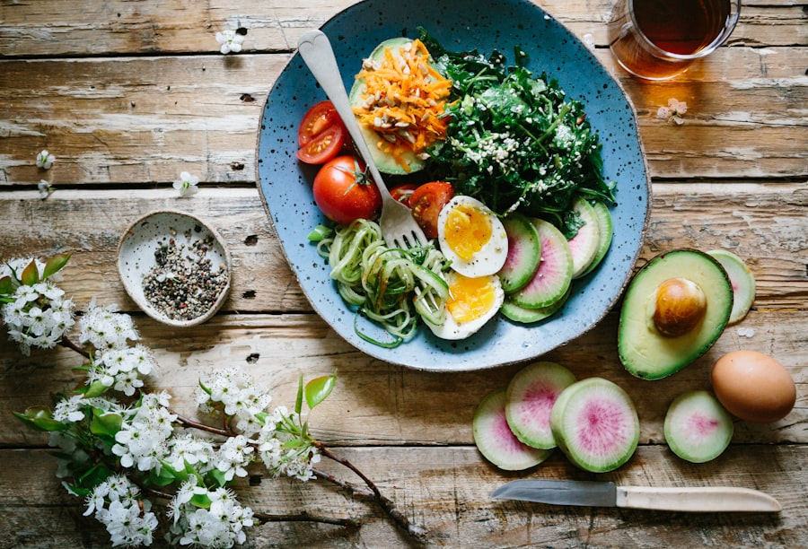

Zdrowie, samopoczucie i tryby warunkowe
Słowniczek tematyczny, zwroty służące do mówienia o samopoczuciu, gramatyka conditionals (tryby 0, I, II), czasownik should, propozycje i sugestie — plus 45 zadań z kluczem.
01Słowniczek — Health
Słownictwo o zdrowiu z Unit 8 pogrupowane w sześć kategorii: kontuzje, narządy, służba zdrowia, leczenie, tryb życia i pozostałe wyrazy.

Kontuzje i problemy zdrowotne
- accidentwypadek
- allergyalergia
- backacheból pleców
- to be allergic to sthbyć uczulonym
- to break (your leg)złamać (nogę)
- bruisesiniec
- to catch a coldprzeziębić się
- cold / a bit of a coldprzeziębienie
- coughkaszel / kaszleć
- cutskaleczenie
- to faintzemdleć
- to fall illzachorować
- flugrypa
- food poisoningzatrucie pokarmowe
- headacheból głowy
- to hurtboleć
- illness / sicknesschoroba
- infectioninfekcja
- injurykontuzja
- stomachacheból brzucha
- toothacheból zęba
- fevergorączka
Narządy i ciało
- bloodkrew
- blood groupgrupa krwi
- bonekość
- brainmózg
- heartserce
- heart ratetętno
- kidneynerka
- liverwątroba
- lungspłuca
- musclemięsień
- skinskóra
- spinekręgosłup
- stomachżołądek
- breathoddech
Służba zdrowia
- ambulancekaretka
- emergencynagły wypadek
- GP / General Practitionerlekarz rodzinny
- hospitalszpital
- nursepielęgniarka
- opticianoptyk / okulista
- patientpacjent
- surgeonchirurg
- vetweterynarz
- paramedicratownik medyczny
Leczenie
- alternative medicinemedycyna alternatywna
- antibioticantybiotyk
- bandagebandaż
- check-upbadanie kontrolne
- to consult your doctorskonsultować się z lekarzem
- cough syrupsyrop na kaszel
- to describe symptomsopisać objawy
- dropskrople
- to examinebadać
- first aid kitapteczka
- to give an injectiondać zastrzyk
- to make an appointmentumówić wizytę
- medicine / medicationlekarstwo
- ointmentmaść
- operation / surgeryoperacja
- painkillerśrodek przeciwbólowy
- pill / tablettabletka
- to prescribeprzepisać (lek)
- to recover fromwyzdrowieć z
- to take a pillwziąć tabletkę
- to take sb's temperaturemierzyć temperaturę
- thermometertermometr
- therapyterapia
- treatmentleczenie
- to vaccinate / vaccinationszczepić / szczepienie
- X-rayprześwietlenie / rentgen
Tryb życia
- addictionuzależnienie
- to be addicted to sthbyć uzależnionym od
- to cut down on sthograniczyć coś
- to do sportsuprawiać sport
- to eat healthilyzdrowo się odżywiać
- to get enough sleepwysypiać się
- to get regular exerciseregularnie ćwiczyć
- to give up smokingrzucić palenie
- to go on a dietprzejść na dietę
- to keep fitutrzymywać formę
- to lose weighttracić wagę
- processed foodżywność przetworzona
- to put on weightprzybierać na wadze
- to work outćwiczyć (na siłowni)
Pozostałe
- to breathe in/outwdychać / wydychać
- dreadfulokropny
- hugprzytulić
- to hold your breathwstrzymać oddech
- Is it serious?Czy to coś poważnego?
- to feel terrible / awfulczuć się okropnie
- dizzymający zawroty głowy
- itchyswędzący
- to suffer from sthcierpieć na coś
- hay feverkatar sienny


02Samopoczucie — pytania i odpowiedzi
Kiedy pytasz kogoś o samopoczucie albo sam(a) o nim mówisz, użyj jednej z poniższych formuł. Po lewej — pytania, po prawej — odpowiedzi.
Pytania (questions)
- How are you?Jak się masz?
- How's your dad?Jak się ma twój tata?
- How are your parents?Jak się mają twoi rodzice?
- How are you feeling?Jak się czujesz?
- Are you OK?Nic ci nie jest?
- What's the matter?Co się stało? / Co ci jest?
- Is something the matter?Czy coś się stało?
- What seems to be the problem?Co panu/pani dolega?
Odpowiedzi (answers)
- Fine, thanks. (And you?)Dziękuję, dobrze. (A ty?)
- I'm fine / OK / very well, thank you.Dziękuję, mam się dobrze.
- I'm OK, just a bit tired.W porządku, tylko trochę zmęczony/a.
- Not very well, I'm afraid.Niestety nie za dobrze.
- I feel terrible / awful.Czuję się okropnie.
- I feel ill / tired.Czuję się chory/zmęczony.
- I think I'm ill.Chyba jestem chory/chora.
- I feel sick.Jest mi niedobrze.
- I've got a bad headache.Bardzo boli mnie głowa.
- I've got a cough.Mam kaszel.
- I've got a bit of a cold.Jestem trochę przeziębiony/a.
- My leg / arm hurts.Boli mnie noga / ręka.
- I think my leg's broken.Chyba mam złamaną nogę.
Konstrukcja I've got… (= I have got = I have) to najpopularniejszy sposób opisania objawu: I've got a headache / a cough / a cold / a sore throat. Z czasownikiem hurt mówimy o konkretnej części ciała: My arm hurts. (hurt = boleć).
03Tryby warunkowe — Conditionals
Zdanie warunkowe (conditional sentence) składa się z dwóch części: zdania podrzędnego (warunkowego) zaczynającego się od if oraz zdania nadrzędnego (wynikowego). Wybór trybu zależy od tego, czy mówimy o fakcie, czymś możliwym, czy o hipotezie.
Tryb 0 — Zero Conditional
Tryb I — First Conditional
unless = if not (chyba że / jeśli nie). Po unless nie używamy żadnej dodatkowej negacji.
• Unless you keep fit, you will always feel tired.
Jeśli nie zadbasz o formę, zawsze będziesz czuł zmęczenie.
• A specialist will not see you unless you have a referral from your GP.
Specjalista cię nie przyjmie, jeśli nie będziesz miał skierowania od lekarza rodzinnego.
Tryb II — Second Conditional
W II okresie warunkowym po if używamy were dla wszystkich osób (również dla I/he/she/it) — to forma podręcznikowa. If I were you, I would… = „Na twoim miejscu…".
Przecinek i kolejność zdań
Jeżeli zdanie z if stoi na początku, oddzielamy je przecinkiem. Jeżeli stoi na końcu — przecinka nie ma.
- If you don't leave a message, I'll ring you back. (przecinek po if-clause)
- I'll ring you back if you don't leave a message. (bez przecinka)
04Czasownik modalny should
Should tłumaczymy jako powinienem / powinnaś / powinniśmy. To czasownik modalny, więc nie odmienia się przez osoby i nie wymaga końcówki -s w 3. osobie.
Kiedy używamy should?
- Udzielamy rad lub wyrażamy opinię:
You should rest. It'll help. Powinieneś odpocząć. Pomoże to. - Proponujemy coś / pytamy o radę:
Should I go to the party? Czy powinienem iść na imprezę? - Wyrażamy zakazy lub powinności:
Children shouldn't play with matches. Dzieci nie powinny bawić się zapałkami.
Odmiana
| Forma | Schemat | Przykład |
|---|---|---|
| zdanie twierdzące | I / You / He / She / It / We / They + should + verb | You should wait. |
| zdanie przeczące | I / You / He / She / It / We / They + shouldn't (should not) + verb | You shouldn't smoke. |
| pytanie ogólne | Should + I / you / he / she / it / we / they + verb ? | Should we wait? |
| krótka odpowiedź TAK | Yes, + osoba + should. | Yes, you should. |
| krótka odpowiedź NIE | No, + osoba + shouldn't. | No, you shouldn't. |
W trybach 0 i I można dodać should/shouldn't w zdaniu nadrzędnym, by wzmocnić radę: If the signal doesn't work, (you should) buy another one. / If you have back problems, you shouldn't carry heavy boxes.
05Propozycje i sugestie — Suggestions
Składając lub przyjmując propozycję, korzystaj z konkretnych zwrotów. Po lewej — propozycje, po prawej — typowe reakcje.
Propozycje (suggestions)
- Let's go to the cinema.Chodźmy do kina.
- Let's not do it.Nie róbmy tego.
- We could make pizza.Moglibyśmy zrobić pizzę.
- Why don't we ask him for help?Dlaczego nie poprosimy go o pomoc?
- Would you like to come to the party?Czy chciałbyś przyjść na imprezę?
- Shall I open the window?Czy mam otworzyć okno?
- Shall we dance?Zatańczymy?
Odpowiedzi (responses)
- That sounds great / interesting.To brzmi świetnie / interesująco.
- Good idea.Dobry pomysł.
- Yes, I'd like / love to.Z przyjemnością. / Bardzo chętnie.
- I'd rather go to the theatre.Wolałbym pójść do teatru.
- I'd rather not go to the theatre.Wolałbym nie iść do teatru.
- I'd prefer to go to the concert.Wolałbym pójść na koncert.
- I'd prefer not to stay up late.Wolałbym nie siedzieć do późna.
Shall używamy najczęściej w 1. osobie (I, we), proponując coś lub pytając o pozwolenie: Shall I help you? / Shall we go now? W innych osobach naturalniejsze jest Should lub Will.
06Słowotwórstwo — przymiotniki
Z rzeczowników i czasowników tworzymy przymiotniki dodając konkretny przyrostek. Poniżej najczęstsze przyrostki przymiotnikowe.
surprised — zaskoczony
worried — zmartwiony
embarrassed — zawstydzony
careful — uważny
helpful — pomocny
painful — bolesny
careless — nieostrożny
useless — bezużyteczny
painless — bezbolesny
natural — naturalny
medical — medyczny
traditional — tradycyjny
creative — twórczy
attractive — atrakcyjny
itchy — swędzący
dizzy — z zawrotami głowy
sleepy — śpiący
07Czytanie ze zrozumieniem — Jola's lifestyle
Mini-tekst z luki. Przeczytaj poradę dla Joli, a w głowie spróbuj uzupełnić luki słowami z ramki. Wzorowane na przykładach z Unit 8 Revision.
Jola has been unwell lately. She has junk food every day and avoids PE classes. She doesn't sleep well and she wants to change her lifestyle. Here are a few pieces of advice for her.
- If I were you, I would cut down on processed food.
- If you ate healthy meals, you would feel much better.
- You need to drink a lot of water. It will taste better if you add some lemon to it.
- Before PE classes, put on your shoes — physical activity is as important as a healthy diet.
- If you get regular exercise, your sleep will improve.
Zwróć uwagę: pierwsza rada to II Conditional (If I were you, I would… = „Na twoim miejscu…"), druga to II Conditional z ate / would feel, a ostatnia to I Conditional (If you get… your sleep will improve).
Zadania — 45 ćwiczeń z kluczem
Trzy poziomy trudności po 15 zadań. Kliknij zadanie, aby zobaczyć odpowiedź wraz z krótkim komentarzem.
1
łatwe
Przetłumacz na angielski: kaszel (rzeczownik).
Odpowiedź
cough
2
łatwe
Przetłumacz: tabletka.
Odpowiedź
pill lub tablet
3
łatwe
Przetłumacz: bandaż / opatrunek.
Odpowiedź
bandage
4
łatwe
Przetłumacz: gorączka.
Odpowiedź
fever (lub (high) temperature)
5
łatwe
Przetłumacz: ból głowy.
Odpowiedź
headache /ˈhedeɪk/
6
łatwe
Przetłumacz: zastrzyk.
Odpowiedź
injection
7
łatwe
Co oznacza skrót GP?
GP?Odpowiedź
GP = General Practitioner — lekarz rodzinny / pierwszego kontaktu
8
łatwe
Przetłumacz: szczepić (czasownik).
Odpowiedź
to vaccinate
9
łatwe
Przetłumacz: badanie kontrolne.
Odpowiedź
check-up
10
łatwe
Wybierz właściwą odpowiedź na pytanie How are you?
A) Fine, thanks. B) I'm going home. C) See you tomorrow.
A) Fine, thanks. B) I'm going home. C) See you tomorrow.
Odpowiedź
A) Fine, thanks.
11
łatwe
Wybierz właściwą odpowiedź na pytanie What's the matter?
A) I've got a cold. B) See you tomorrow. C) Here you are.
A) I've got a cold. B) See you tomorrow. C) Here you are.
Odpowiedź
A) I've got a cold.
12
łatwe
Dokończ odpowiedź: Are you OK? — Not very well, I'm .
Odpowiedź
I'm afraid
13
łatwe
Zero Conditional. Uzupełnij we właściwej formie:
If you (heat) water to 100°C, it (boil).
If you (heat) water to 100°C, it (boil).
Odpowiedź
heat, boils
14
łatwe
Zero Conditional. Uzupełnij:
When I (have) a cold, I (stay) at home.
When I (have) a cold, I (stay) at home.
Odpowiedź
have, stay
15
łatwe
Wybierz właściwą formę propozycji: ___ go to the park.
A) Let's B) Would C) Should
A) Let's B) Would C) Should
Odpowiedź
A) Let's — Let's go to the park.
16–30 Zadania średnie
16
średnie
Przetłumacz na angielski: „Jak się czujesz?"
Odpowiedź
How are you feeling? (lub How do you feel?)
17
średnie
Przetłumacz: „Mam kaszel."
Odpowiedź
I've got a cough. (lub I have a cough.)
18
średnie
Przetłumacz: „Chyba mam złamaną nogę."
Odpowiedź
I think my leg's broken. (= my leg is broken)
19
średnie
First Conditional. Uzupełnij:
If it (rain) tomorrow, we (stay) at home.
If it (rain) tomorrow, we (stay) at home.
Odpowiedź
rains, will stay (skrót: 'll stay)
20
średnie
First Conditional. Uzupełnij:
I (call) you if I (be) late.
I (call) you if I (be) late.
Odpowiedź
'll call (will call), am
21
średnie
Udziel rady używając should/shouldn't: „Moja siostra ma ból głowy." Napisz po angielsku 2 rady.
Odpowiedź
Przykładowe rady: She should take a painkiller. / She should rest in a dark room. / She shouldn't watch TV. / She shouldn't drink coffee.
22
średnie
Uzupełnij should albo shouldn't:
Children play with matches.
Children play with matches.
Odpowiedź
shouldn't — Children shouldn't play with matches.
23
średnie
Przekształć używając unless:
If you don't go to bed early, you'll be tired.
If you don't go to bed early, you'll be tired.
Odpowiedź
Unless you go to bed early, you'll be tired.
24
średnie
Wstaw If lub Unless:
______ you keep fit, you will always feel tired.
______ you keep fit, you will always feel tired.
Odpowiedź
Unless
25
średnie
Przetłumacz: „Moglibyśmy zrobić pizzę."
Odpowiedź
We could make pizza.
26
średnie
Przetłumacz odpowiedź na propozycję: „Wolałbym pójść do teatru."
Odpowiedź
I'd rather go to the theatre.
27
średnie
Słowotwórstwo. Utwórz przymiotnik od USE z przyrostkiem -ful.
USE z przyrostkiem -ful.Odpowiedź
useful — przydatny, użyteczny
28
średnie
Słowotwórstwo. Utwórz przymiotnik od HOPE z przyrostkiem -less.
HOPE z przyrostkiem -less.Odpowiedź
hopeless — beznadziejny
29
średnie
Słowotwórstwo. Utwórz przymiotnik od CULTURE z przyrostkiem -al.
CULTURE z przyrostkiem -al.Odpowiedź
cultural — kulturalny
30
średnie
Przetłumacz: „Czy mam otworzyć okno?" (zaproponuj pomoc)
Odpowiedź
Shall I open the window?
31–45 Zadania trudne
31
trudne
Second Conditional. Uzupełnij:
If I (be) you, I (study) harder.
If I (be) you, I (study) harder.
Odpowiedź
were, would study
32
trudne
Second Conditional. Uzupełnij:
If we (have) more time, we (visit) Rome.
If we (have) more time, we (visit) Rome.
Odpowiedź
had, would visit
33
trudne
Rozpoznaj typ zdania warunkowego:
„If water boils, it turns into steam."
„If water boils, it turns into steam."
Odpowiedź
Zero Conditional — fakt naukowy.
34
trudne
Rozpoznaj typ i uzupełnij:
If you (drink) more water, you (feel) better.
If you (drink) more water, you (feel) better.
Odpowiedź
Typ: First Conditional. Uzupełnienia: drink, 'll feel (will feel).
35
trudne
Second Conditional, przeczenie:
If I had a car, I (not take) the bus.
If I had a car, I (not take) the bus.
Odpowiedź
wouldn't take (= would not take)
36
trudne
Przetłumacz na angielski (uwaga: który tryb warunkowy?):
„Jeśli będę miał czas, zadzwonię."
„Jeśli będę miał czas, zadzwonię."
Odpowiedź
If I have time, I'll call you. (First Conditional)
37
trudne
Przetłumacz: „Gdybym był bogaty, kupiłbym jacht."
Odpowiedź
If I were rich, I would buy a yacht. (Second Conditional)
38
trudne
Use of English. Wykorzystując słowo FROM, przekształć zdanie:
Jessica has got hay fever. → Jessica hay fever.
FROM, przekształć zdanie:Jessica has got hay fever. → Jessica hay fever.
Odpowiedź
Jessica suffers from hay fever.
39
trudne
Use of English. Wykorzystując ALLERGIC, przekształć:
Cathy has got an allergy to nuts. → Cathy nuts.
ALLERGIC, przekształć:Cathy has got an allergy to nuts. → Cathy nuts.
Odpowiedź
Cathy is allergic to nuts.
40
trudne
Use of English. Wykorzystując GET, przekształć:
Jim sleeps too little. → Jim doesn't sleep.
GET, przekształć:Jim sleeps too little. → Jim doesn't sleep.
Odpowiedź
Jim doesn't get enough sleep.
41
trudne
Use of English. Wykorzystując SHOULD, przekształć:
You'd better stop smoking soon. → You smoking soon.
SHOULD, przekształć:You'd better stop smoking soon. → You smoking soon.
Odpowiedź
You should stop smoking soon.
42
trudne
Uzupełnij dialog:
A: ____ you OK?
B: Not very well, I'm ____.
A: ____ you OK?
B: Not very well, I'm ____.
Odpowiedź
A: Are you OK? B: Not very well, I'm afraid.
43
trudne
Napisz krótki dialog pacjent–lekarz (minimum 4 wymiany). Użyj co najmniej jednego pytania o samopoczucie, jednego objawu i jednej rady z should.
Odpowiedź
Przykładowy dialog:
Doctor: Good morning. How are you feeling today?
Patient: Not very well, I'm afraid. I've got a terrible headache and a fever.
Doctor: Let me take your temperature. … Yes, you have a high fever. You should stay in bed and drink plenty of water.
Patient: Should I take any medicine?
Doctor: Yes, take this painkiller every six hours. If you don't feel better in three days, come back for a check-up.
Patient: Thank you, doctor.
44
trudne
Twój kolega ma silny kaszel. Napisz mu radę po angielsku (3–4 zdania). Użyj co najmniej raz: should, shouldn't, If you….
Odpowiedź
Przykładowa rada:
You should drink hot tea with honey and lemon. If you cough a lot at night, take some cough syrup before sleep. You shouldn't go out in the cold. Unless you rest properly, you won't get better quickly.
45
trudne
Zbiór końcowy. Ułóż 5 zdań na temat zdrowia — każde inną konstrukcją:
a) Zero Conditional, b) First Conditional, c) Second Conditional, d) zdanie z should, e) propozycja (Let's / Why don't we / Shall we).
a) Zero Conditional, b) First Conditional, c) Second Conditional, d) zdanie z should, e) propozycja (Let's / Why don't we / Shall we).
Odpowiedź
Przykładowy zestaw zdań:
a) Zero: If you eat too much sugar, you put on weight.
b) First: If you exercise tomorrow, you'll feel much better.
c) Second: If I were a doctor, I would help everyone.
d) Should: You should drink eight glasses of water a day.
e) Propozycja: Let's go for a run after school. (lub Why don't we go for a run? / Shall we go for a run?)